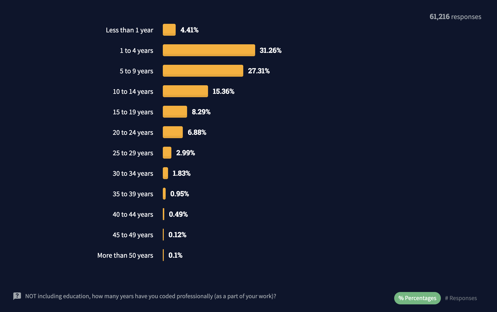
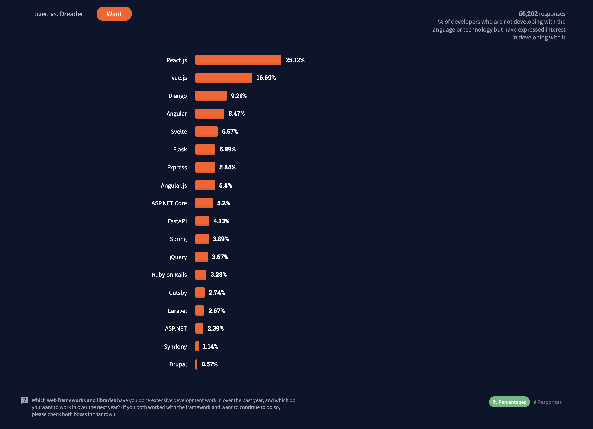
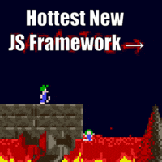
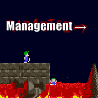
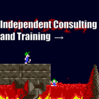

Future-Proof Your Company by Effectively Scaling Engineering Teams
Jennifer Wadella

Jennifer Wadella
@likeOMGitsFEDAY
- Director of Angular Development at Bitovi
- Angular GDE
- International Speaker (pre-pandemic)
- Kombucha brewin' crazy plant lady

This talk may contain strong language, harsh truths, and serious passion.
Goals for This Talk
- Survive the Senior Hire Frenzy
- Improve Your Interview Process
- Learn to Quickly Spot Skill Gaps
- Create a Growth Environment
🔥 Survive the Senior Hire Frenzy 🔥
Current Hiring Landscape
"Just above 50% of engineers accepted job offers for those roles in the first quarter of 2021 — 171 of 320 offers — compared to a median above 65% in 2020. "
Facebook's hiring crisis: Engineers are turning down offers, internal docs show
Years Coding Professionally
Most Wanted Web Frameworks
Where are all the Senior Angular Developers?
  Senior Salaries May Not Get You Senior Talent
- 3-4 years = senior
- In reality, you can have 3-4 years of experience on your resume with writing very little code.
- This will only get worse as frantic hiring continues
- "senior" means something different everywhere
Senior "Angular" Developers
Most Angular applicants have built applications in Angular, but can't tell you much about how their code really works.
Entering the "senior hiring frenzy" may not yield the results you're hoping for.
Open the door for hiring more junior candidates. It may be the only way you survive.
🔮 Improve Your Interview Process 🔮
Interview Strategies
- Take home code test
- Pair Programming sessions
- Building interview questions
Take Home Code Test
- Should be completable in ~30 minutes
- Should have clear requirements explained
- Should touch on key area of your needs. ex. forms, NgRx, complex RxJS streams
Pair Programming Interviews
- Interviewer is driver
- Describe a feature and how it should works
- Interviewee can describe how to implement
- Remaining time can be used to talk performance tuning
Building Interview Questions
- Start abstract
- Dig into technical specifics when mentioned by candidate
- Have a few key phrases you're listening for
- Be prepared to press for technical details. ex. "how would you explain this to someone who's never used NgRx before?"
Key skill areas to touch on
- Angular, TypeScript, and RxJS
- JavaScript knowledge
- Ecosystem knowledge
- Front-end skills - semantic HTML & CSS
- Version control, branching, PR Review process
- Preferred tooling
👀 Spot Skill Gaps Quickly 👀
Fix Your Project Management
You cannot tell true productivity of engineers until good project management is in place.
WIP PRs
Enforce a process of opening work-in-progress PRs as soon as work starts on an issue.
- Encourage committing code at end of every day
- Can spot code quality issues faster
- Facilitate pair-programming more easily
⚠️ ⚠️ ⚠️
Do NOT wait for a PR to
be submitted to start coaching
Because by then it's too late.
⚠️ ⚠️ ⚠️
Promote & Encourage Question Asking
Don't shame questions, the quicker people ask questions when they are stuck, the quicker they can get the education they need.
Onboarding
Create an onboarding system.
- Can they answer what the vision of the product is? Who the users are? Why certain technical decisions have been made?
- How quickly should someone be able to set up their environment?
- Do they know the process from getting assigned work to getting the code for the deployed?
- How quickly should someone be able to submit their first PR?
Reduce Blockers
You must deal with blockers or get sucked into the excuses game.
🌦️ Create a Growth Environment 🌦️
Why Is A Growth Environment So Critical?
It's easy to put project success in hands of one capable developer. There are short-term speed gains that can blind to long-term inability to maintain.
Understand Team Member Limitations
Are you working with a few seasoned team members? Brand new team? Coming into an existing team?
Your Number One Priority Should Be Knowledge-Spreading
You must carve out time from feature delivery and deadlines for team members to focus on mentoring.
Create KPIs
Team members should have motivation to prioritize mentoring/knowledge sharing alongside code-delivery. Praise collaboration and question answering.
Assign DRIs
Having designated people in charge of onboarding, documentation, PR Review process can share responsibility and help enforcement of updating these areas as needed. If a question gets asked more than once by someone, it should be documented.
Set Up Mentoring Practices
Passive mentoring activities like PR reviews, answering questions in Slack
Active mentoring activities like leading knowledge sessions, offering pair programming.
Force Pair Programming
Start off with a scheduled rotation. Make vulnerability and not knowing things ok.
Do one, see one, teach one.
PRs as Documentation
Bookmark PRs that showcases repeated issues + conversations
Copy PR quote into wikis for documentation around codesmells and best practices
PRs as Coaching Mechanisms
If a PR requires more than 5 comments, encourage jumping into pairing sessions to discuss issues.
Learning Sessions
Schedule weekly learning sessions for knowledge-sharing, and make them mandatory. Can start topic based (5-15 minutes), if people don't volunteer, assign research topics.
RxJS operators ● viewChild ● Form Validators ● Custom directives ● Content projection
Solicit Feedback
Ask your team how you can help them scale up team members. Take their ideas and transform into policy.
Summary
- The senior talent bidding war is brutal
- Review your interview process
- Create systems to spot skill gaps
- Prioritize facilitating growth & mentoring
This is Hard, Hard Work.
It requires dedication, vigilance, and continuous pushing.
Questions?
Slides available at:
ScalingEngineeringTeams.jenniferwadella.com

Need help with  ? Work with me! jennifer@bitovi.com
? Work with me! jennifer@bitovi.com